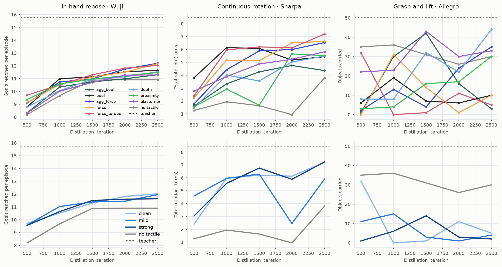

Platform Overview

We integrate tactile sensors in Genesis physics simulation, exposing a representative set of tactile sensing abstractions — binary contact, contact depth, per-taxel force/torque, elastomer marker displacement, geometry-aware proximity, and a voxelized temperature field — under a common, configurable interface that runs across thousands of parallel environments on a single GPU.

ElastomerTaxel. The right-side table reports relative
marker-displacement error after optimizing each simulator's parameters to match the real image.
Privileged teacher policies replayed in the browser. Each replay carries the scene geometry and the per-step link poses, so the camera orbits and the trajectory scrubs with no server and no simulator running. Pick a task and an object variant. They open in a new tab.

in_palm_rotate, in_hand_repose,
and screwdriver on the XHand1, we compare tactile data types against the privileged teacher and
distilled tactile student, varying placement (tips / fingers / whole hand), resolution, and noise.
Every tactile student is distilled from the same privileged teacher for its hand and task, so the only thing
that changes across a row is what the student can feel. The first view compares tactile types at the end of
distillation; the second holds the type at force_torque and varies the sensor imperfection
profile. Hover a mark for its value.